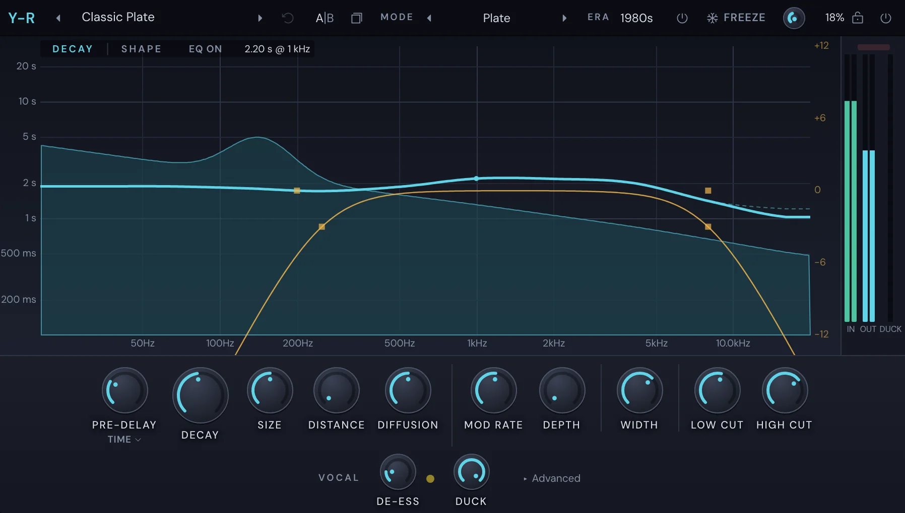

Mix
Y-R
Y-R is a reverb made with vocals in mind, though it works on anything. Pick a mode (a plate, a room, a hall), an era for its colour, then shape how long each part of the sound rings. It can duck its tail while the vocal sings, take the "s" out of what it sends, and freeze the tail for ever.

Get started
- Put Y-R in a mixer slot (see Built-in effects). On a track that sounds of its own it starts at a low Mix, so you hear the dry sound with some space round it.
- Pick a preset from the menu in the top bar, or a MODE.
- Set Decay for how long the tail lasts, and Pre-delay for the gap before it starts.
- Turn Mix up or down until it sits.
The top bar
Presets: the arrows and the preset menu. The menu also has Init (Smooth Plate, 1.8 s, nothing else), Copy settings, Paste settings and Revert.
Revert: back to the preset as you loaded it. It's lit once you've changed something.
A│B and Copy: two settings at once (see Built-in effects).
MODE: the kind of space. Use the arrows, or click the name for the menu.
Mode What it is Smooth Plate The plate without the metal: silky and even. The vocal default. Plate Instant and dense, with a little sheen. Room A real close room: walls you can hear, a short tail. Chamber A dense echo chamber: quick and warm, no distinct echoes. Hall A big hall: a slow bloom, lush chorus in the tail. Ambience Early energy and air, almost no tail. Felt, not heard. ERA: the colour of the machine it's on. Now is full bandwidth and clean. 1980s rolls off the top a little and adds a hardware sheen. 1970s is darker and grainier.
Kill: hold it to mute what goes in while you hear the tail. Useful to hear what the reverb is doing on its own.
FREEZE: holds the tail for ever. ⌥-click it to freeze only while you hold it.
Mix: how much reverb against the dry sound. Mix Lock beside it keeps presets and A/B from changing it.
Bypass.
Keys
While Y-R's window is in front:
| Key | What it does |
|---|---|
| F | Tap to turn Freeze on or off; hold to freeze only while held. |
| ← / → | Previous or next preset. |
| Tab | Switches between DECAY and SHAPE. |
| A | Switches between A and B. |
The display
The display has two tabs: DECAY and SHAPE. As you move the pointer over it, a readout says what's under it.
DECAY
DECAY shows how long each frequency rings. Low on the left, high on the right; the higher the curve, the longer that part rings. You shape it with bands, as you would an EQ.
| Gesture | What it does |
|---|---|
| Double-click the empty display | Makes a band there (a notch near the bottom). |
| Drag a band's dot | Moves its frequency (sideways) and how much longer or shorter it rings (up and down). ⇧ for fine, ⌥ for one axis. Several selected bands move together. |
| Scroll over a dot | Changes its Q. |
| ⌥-click a dot | Bypasses the band. |
| Drag the curve | Moves Decay for the whole sound. |
| Drag a Post EQ handle | Sets the output's low and high shelves. |
The button by the tabs bypasses every band at once, so you can hear what they do.
SHAPE
SHAPE shows the reverb over time: the gap, the early reflections and the tail.
| Gesture | What it does |
|---|---|
| Drag the gap's edge sideways | Sets Pre-delay. |
| Drag the slope | Sets Decay. |
| Drag the early cluster sideways | Sets Distance. |
| Double-click | Plays a click through the reverb, so you hear its shape. |
The display's menu
Right-click the display for:
- A band's shape (Low shelf, Bell, High shelf, Notch), Bypass band or Enable band, Delete band.
- Reset decay bands and Reset Post EQ.
- Show natural curve: how the mode rings before your bands. Show analyzer.
- Log time, in SHAPE.
- Copy curve and Paste curve, to take a decay curve to another Y-R.
Meters
IN, OUT and DUCK at the side show the level in, the level out and how far the tail is ducked. A lamp lights if the reverb's loop clipped.
The main controls
- Pre-delay: the gap between the dry sound and the reverb. Click Sync for a note value (straight, dotted or triplet) to keep it in time with the song, or Time (ms).
- Decay (the big knob): how long the tail lasts. Turn it all the way for a tail that never ends.
- Size: how big the space is.
- Distance: how far away the sound seems, by moving the early reflections.
- Diffusion: how smeared the echoes are, from distinct to a smooth wash.
- Mod Rate and Depth: a slow movement in the tail that keeps it from ringing metallic.
- Width: how wide the reverb is.
- Low Cut and High Cut: take the mud and the fizz off the reverb, not the dry sound.
The vocal row
- De-ess: takes the "s" sounds out of what goes into the reverb, so they don't splash. The lamp lights while it works.
- Duck: turns the tail down while the sound plays and back up in the gaps, so the vocal stays clear.
Advanced
Click ▸ Advanced for the rest. The panel is in four groups.
Input: what goes into the reverb.
- Input: Auto, Mono or Stereo.
- Cross: how much of each side feeds the other.
- Low Cut and High Cut: filters before the reverb.
- De-ess Freq: where the de-esser listens.
- Offset: nudges a synced pre-delay. It shows only when Pre-delay is synced.
- VLF Cut: takes out the very lowest frequencies.
Early & late: the reflections and the tail.
- Early Send: how loud the early reflections are.
- Early Cross: how much they cross between the sides.
- Late Diff.: how smeared the tail is.
- Mod Shape: Chorus or Random.
- Variation: a different version of the same space; step through them with the arrows.
- Tone Lock: the Decay bands change how long each band rings, not how loud.
Ducking: how Duck listens.
- Key: what it listens to: this track, or another track (the same as the slot's Sidechain input, see Sidechain).
- Thresh: where ducking starts. AUTO sets it for you.
- Attack, Release (with Sync) and Hold: how fast it ducks and lets go.
- Duck What: Tail (only the tail) or All.
- Auto-Decay: shortens the tail while the sound plays.
- Recovery: how fast the tail comes back.
Output: what comes out.
- Low Shelf and High Shelf, each with its Gain.
- Studio: steep send filters at 600 Hz and 10 kHz, an old studio's trick for a vocal reverb.
- Mono Below: makes the reverb mono under a frequency, so the low end stays centred.
- Output: the reverb's level.
- Cut Slope: how steep the cuts are, 12 or 24 dB per octave.
Knobs
Drag a knob up or down (⇧ for fine), or scroll over it. Double-click to type a value. ⌘-click or ⌥-click resets it. Right-click for Reset, Type in value… and its automation.
Presets
The presets are in folders:
- Lead Vocal: plates, rooms, chambers and halls for a lead, from a short room under a rap vocal to a long ballad hall.
- Pairs: two presets meant to go together on two sends: a short space where the voice sits, and a longer one behind it. Each says which it pairs with.
- Backing Vocals: washes and plates for stacks, harmonies and choirs.
- Throws & FX: big throws, an endless tail, a lo-fi verb.
- Other: snare, drums, keys, synths and acoustic instruments.
Each preset has a line on what it's for.
Automation
Every knob can be automated, and so can Freeze. Right-click the control, or touch it and click Automate "…" in the title bar. See Automation.
Something here wrong or missing? Tell us.